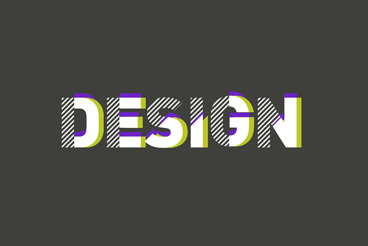

Small Town
I grew up in a small town in Kyoung-Gi in South Korea. That's where I was born and grew up. I was always a curious kid growing up. That curiosity eventually brought me to the other side of the world, now I live in Canada. I love meeting people from different cultures. I enjoy travelling to a random place and getting looked at by the locals XD.
Proud Nerd
I was a full-time nerd at McGill studying mathematics and computer science. I love logic and solving complicated problems with it. Maybe one day I’ll solve a big problem that can help other people. During my time at McGill, I met inspiring people at many conferences, hackathons, and three of my best friends. Good times ;)
Career
I started my career as a software engineer at Cisco. I feel grateful for having worked with such an intelligent people there. But I came to realize that the field of UX is where I can advantage of all my abilities including the coding skills. So I had to leave the switches and routers behind me in the office, and come back to school to get myself ready for the new chapter of my career. At Ezen Academy, I learned graphic design, UX design, as well as front-end development.

More
Outside of work, I train jiu-jitsu and try to find more times to do jazz jam at a local bar. None of them belonged to my comfort zone at first but well..I have love and hate relationship with challenging myself. Now you read about me all the way down here, I’m curious about you. Shoot me an email, I believe in 0 inbox:)